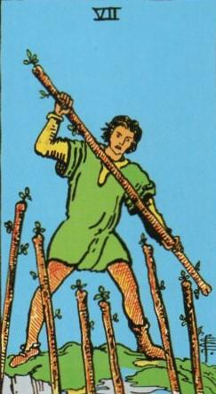
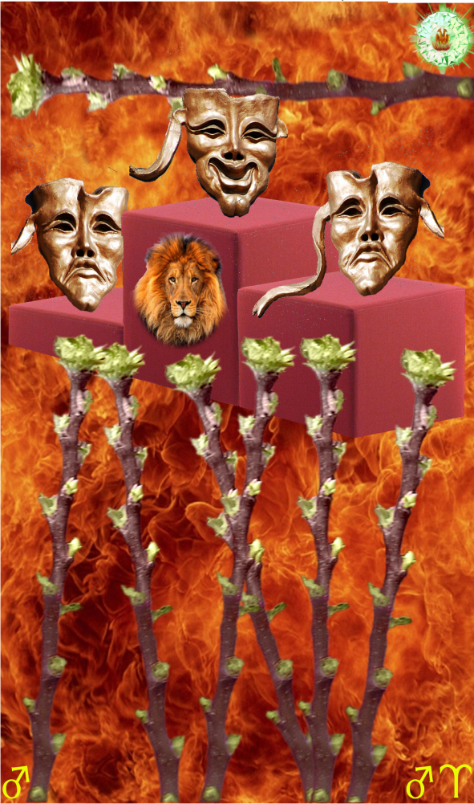
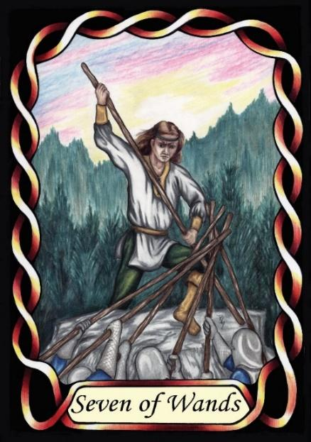

Seven of Wands



Sign |
|
Five: True Path |
|
Sign Ruler |
|
Element |
Fire: change |
Modality |
|
Symbol |
Lion |
Decan |
|
Decan Ruler |
|
Time |
Aug 13 - 23 |
Competitive Leo III
These masters of their own path man spend much of their energy defending their right to follow that path against critics. Being ruled by the Sun and Mars can make them quite arrogant and combative. The Wands denizen may struggle with delegating tasks, fearing loss of control. Their competitive nature can lead to isolation or burnt bridges, and antagonism of co-workers and underlings. A balanced approach to leadership involves empathy and collaboration.
Goldschneider Personology
These arrogant Leos need to lead and succeed. Unlike the previous decans of Leo, these are largely immune to failure. Pride can sometimes result in them refusing to even acknowledge their failures, resulting in an unreasonable and irrational world view. They need to keep their pride under control.
RWS Imagery
A prideful Leo-three fights off six others in a game of “king of the castle”, attempting to assert his leadership over the others. It is a card showing the Mars influence on Leo competitive nature.
Summary:
The Wands represents the Master's unyielding defence of their individual path, fuelled by Leo's pride and Mars' competitiveness. This arrogance can lead to refusal to acknowledge failures, resulting in an unrealistic worldview.